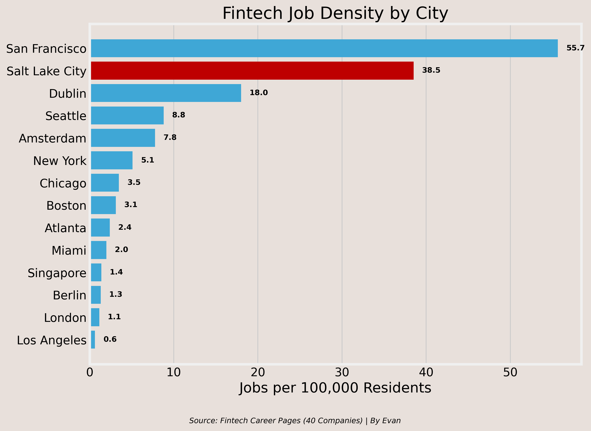
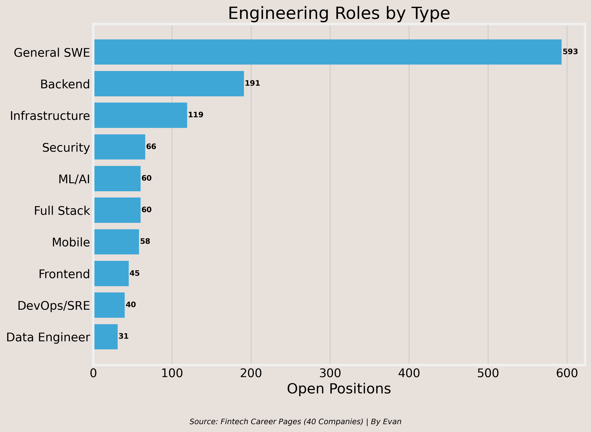
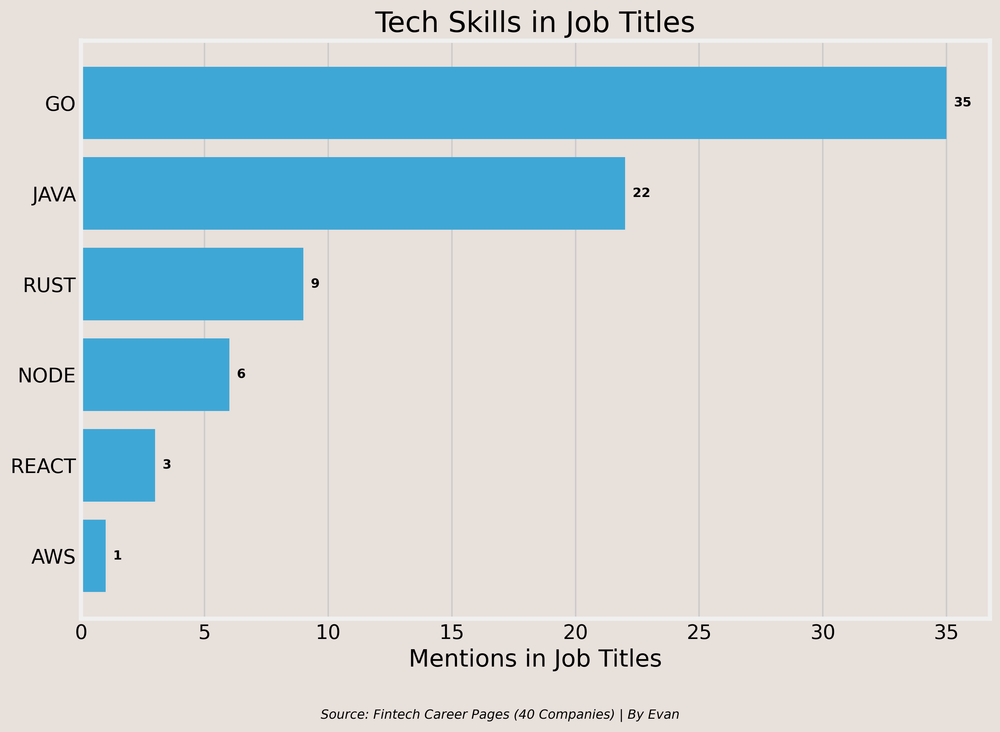

Fintech Hiring Still Looks Selective, Not Dead
I read across fintech career pages to see where the real openings were, what teams were still getting budget, and whether Salt Lake City deserved more attention than it usually gets in the conversation.
San Francisco still leads by a wide margin at 55.7 jobs per 100,000 residents. That is not the surprise. The surprise is Salt Lake City ranking second at 38.5, ahead of bigger-name markets like New York, Chicago, Boston, and Los Angeles.

That does not mean Salt Lake is a larger fintech labor market than San Francisco. It means the city punches harder than people assume once you adjust for size, which is the more useful lens for a student trying to think practically about where real clusters form.
The role-type breakdown makes the main point quickly. The largest bucket by far is general software engineering, followed by backend and infrastructure. Frontend is present, but it is not driving the story.

That matters because it suggests these companies are still spending on core product and systems capacity rather than surface-level polish. A few firms still show real commercial hiring, but the larger footprint sits on the technical side.
Go leads with 35 mentions, ahead of Java at 22. Rust shows up, but it is still niche. React barely appears in the title-level sample. That is not a verdict on the whole market. It is just a reminder that a lot of fintech hiring still revolves around throughput, infrastructure, and systems that have to work every day.

That is what makes the project useful to me. It strips away vague career advice and replaces it with a tighter read on what employers are actually posting.